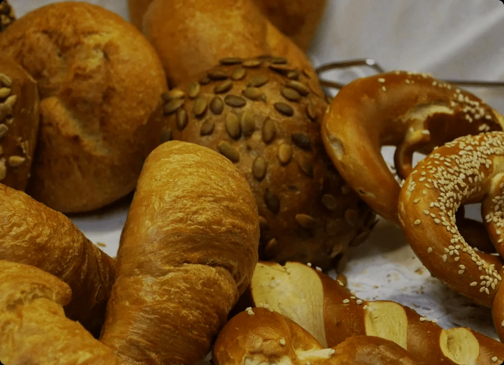
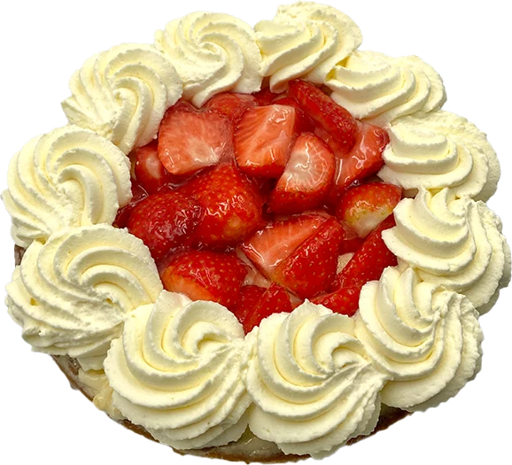
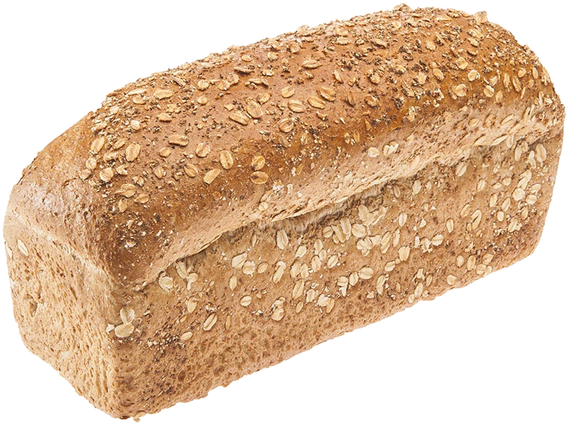
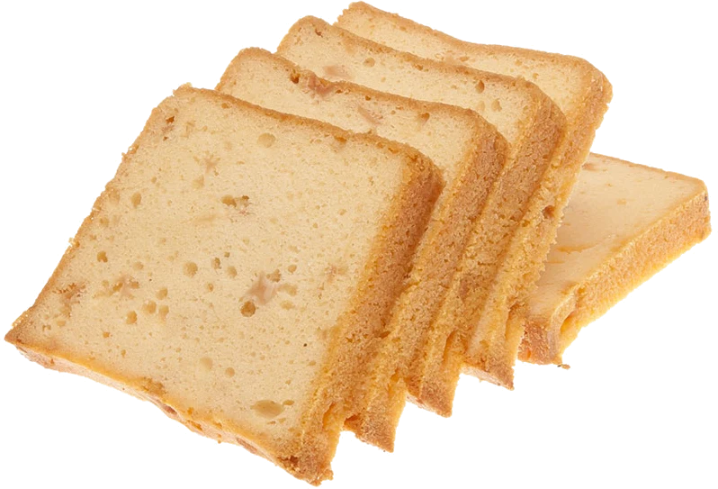
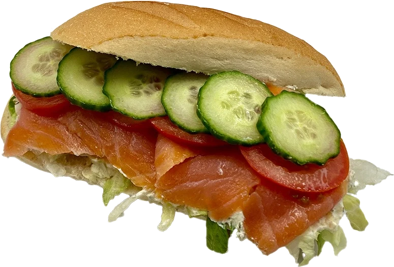
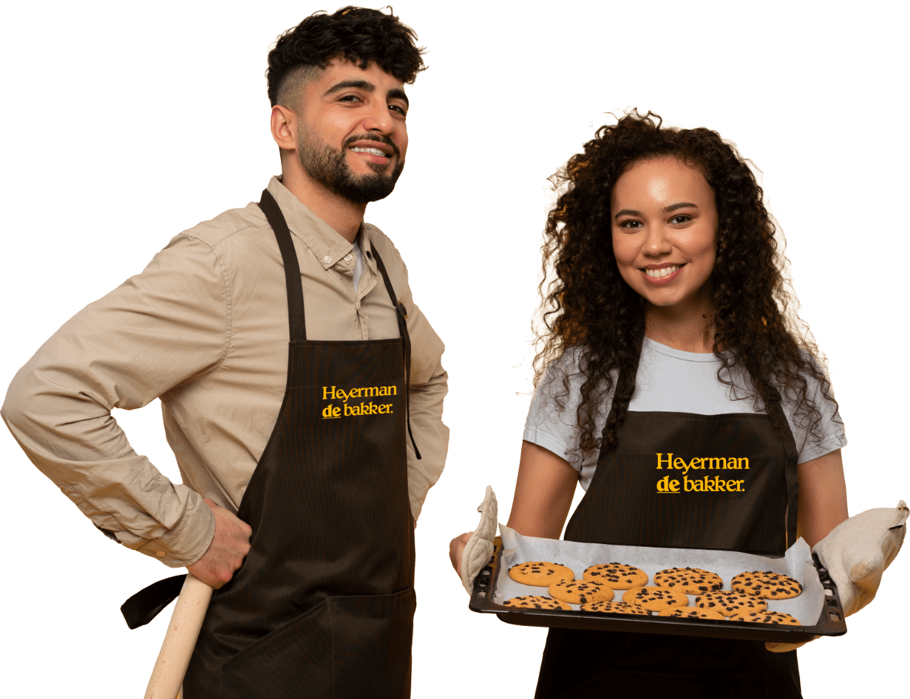
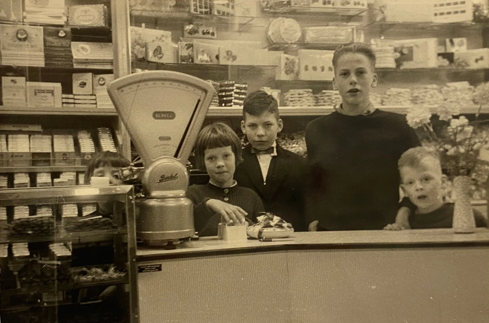

Uw bakker aan de Hogestraat in Aalten
Gebakken terwijl Aalten slaapt.
Onze bakkers werken in de donkere uren van de nacht. Zo begint u de dag met vers brood, broodjes en gebak. Dinsdag tot en met zaterdag open van 8:00 tot 13:00.
4,3 sterren uit 29 Google-reviews

Kom kijken in de vitrine.
Knapperig brood, smaakvolle taarten en gebakjes, elke dag vers bereid. Kom wel op tijd: om 13:00 gaat de deur dicht.
-

Banket
Taarten en gebakjes, volgens klanten een echte aanrader.
-

Brood
Knapperig en vers uit de nacht.
-
Snacks
Warm uit de winkeloven.
-

Koek en cake
Voor bij de koffie.
-

Belegde broodjes
Klaar om mee te nemen.
Dit gaat het hardst.
- Saucijzenbroodje€1,98
- Stokbrood kaas ui (225 gr)€2,45
- Plaatcake bosvruchten€4,25
- Zonnepit bus€1,75 tot €3,35
Koop 3 hele broden en krijg €0,60 korting
Zo gaat dat, elke dag
In de nacht
Als het buiten nog donker is, staan onze bakkers al aan het werk. Zo begint u de dag met de geur en smaak van versgebakken brood.
's Ochtends vroeg
In onze centrale bakkerij in Varsseveld komt alles in beweging. Onze eigen auto's, met laadkleppen en koelcontainers, brengen alles op tijd naar de winkels.
In de winkel
Elke winkel heeft een eigen oven. Daar bakken we ter plekke saucijzen, appelflappen, kaasbroodjes en meer. De geur ruikt u bij binnenkomst.
8:00,
de deur open.
Hogestraat 6, 7122 BV Aalten. Onze dames staan klaar met een glimlach en helpen u graag kiezen.
| Maandag | Gesloten |
|---|---|
| Dinsdag | 8:00 tot 13:00 |
| Woensdag | 8:00 tot 13:00 |
| Donderdag | 8:00 tot 13:00 |
| Vrijdag | 8:00 tot 13:00 |
| Zaterdag | 8:00 tot 13:00 |
| Zondag | Gesloten |

4,3 sterren uit 29 Google-reviews
“Een geweldige bakkerij met heerlijke, ambachtelijke producten! Het brood is altijd vers en smaakvol, en de gebakjes en andere lekkernijen zijn van topkwaliteit. Vooral de verse broodjes en het banket zijn echte aanraders.”
“Maken lekkere broodjes to go. En nog meer lekkere bakker producten.”
“Lekker broodje gegeten met kopje koffie, vriendelijk personeel”

Sinds 1881, nu de vijfde generatie.
In 1881 verhuisde Hendrik Heijerman van Bredevoort naar Varsseveld. Daar opende hij zijn eerste bakkerij met kruidenierswinkel. Sindsdien gaat het vak van generatie op generatie.
Nu leiden de broers Harry en Dirk Heijerman de bakkerij. Die is flink gegroeid en gemoderniseerd, maar er wordt nog altijd gebakken met dezelfde passie en precisie als vroeger.
Geef eens een klomp vol lekkers.
Vanaf 15 euro stellen we een cadeaupakket voor u samen, in een gevulde klomp of op een gouden kartonnen ondergrond, feestelijk in doorzichtig folie. Met onze eigen producten en Achterhoekse streekproducten.
Niet in Aalten? Heyerman vindt u ook in
Varsseveld, Zelhem, Gendringen, Ulft, Dinxperlo, Aalten, Hengelo (Gld), Winterswijk en Lichtenvoorde.
Onze hoofdvestiging staat in Varsseveld en Lichtenvoorde is een franchisewinkel. Bekijk alle vestigingen